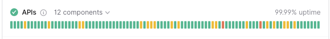
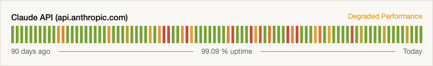
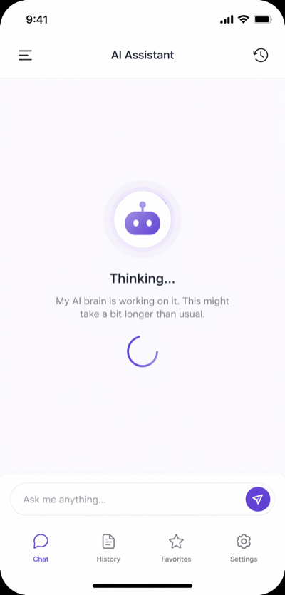

When AI Goes Dark, Your App Goes With It
OpenAI had 103 incidents in six months. Anthropic had 183. Google had multi-region Vertex AI failures.
These are tracked incidents from official status pages, StatusGator, and news coverage over the past six months (October 2025 to April 2026).
The impact is the same for every AI-powered mobile app. The provider goes down, your app goes dark.
The Real Outage Record
OpenAI (October 2025 to April 2026)
- 103 tracked incidents in this 6-month window
- February 3–4, 2026: 28,000+ user reports on February 3 alone. ChatGPT, custom GPTs, and chat history all affected. Recovery took until 9:32 AM PST on February 4.
- April 20, 2026: Users unable to load ChatGPT and Codex, resolved same day.
- April 16, 2026: Responses API streaming errors.
- January 8, 2026: Image input to API and ChatGPT failed.
Pattern: scattered incidents, generally shorter durations, but frequent enough to matter.

Anthropic (Claude) (October 2025 to April 2026)
- 183 tracked incidents in this window, more than OpenAI
- 95 incidents since January 2026 alone
- Typical mean time to recovery: ~214 minutes (~3.5 hours)
- March 25, 2026: Sign-in failures, timeouts, elevated errors across API, Claude.ai, Claude Code, Claude Cowork. First acknowledged 9:39 AM UTC. Fully resolved 1:14 PM UTC. Total duration: ~4.5 hours.
- April 15, 2026: Elevated errors across Claude chatbot, API, and Claude Code. Peaked at ~6,000 user reports. Service went down, partially recovered, went down again. Total window: ~3 hours. Covered by CNBC and TechRadar.
- March 2, 2026: Major outage impacting all platforms. 1,700–4,700 outage reports.
- March 18, 2026: Claude.ai and Claude Code outage. ~40 minutes.
- January 14, 2026: Elevated error rates across Opus 4.5 and Sonnet 4.5.
Pattern: escalating through Q1 2026, cluster of incidents in March–April. Longer recovery windows than OpenAI.

Google (Gemini / Vertex AI) (October 2025 to April 2026)
- February 27, 2026: Vertex AI Gemini API increased error rates on global endpoint. Started 04:37 PST, ended 06:35 PST. ~2 hours. Affected: global endpoint + seven US regions. Also took down Agent Assist, Dialogflow CX, and Google Cloud Support.
- January 7, 2026: Google AI Studio and Gemini API warning. ~1 hour 45 minutes.
- December 3, 2025: Vertex Gemini API warning. ~1 hour 20 minutes.
Pattern: Less frequent but wide blast radius when they do occur (multi-region).
Industry Context
- Global AI outage incidents increased from 1,382 (January 2025) to 2,110 (March 2026), a 53% increase in 14 months.
- AI provider incidents are accelerating. The frequency and duration of outages across all major providers continues to increase.
What This Means for Your App
A user opens your app. They tap the AI feature. They wait.
They get an error, or worse, a spinner that never resolves.
They leave a 1-star review. They churn. They tweet.
The provider's status page updating to "investigating" doesn't help your users right now. And honestly, your users don't care which provider is down. They care that their AI feature doesn't work.

Your Options
Developers have historically had a few choices:
1. Do Nothing (Most Common)
Hope the outage is short. Hope your users are patient. Hope they come back.
Most indie developers and small teams go this route. It's also why so many AI features have reliability complaints in their negative reviews.
2. Build Your Own Fallback Logic
Catch errors. Retry the request. Switch to a different provider if needed. Handle partial streaming responses. Normalize error formats across providers. Manage timeouts. Decide which provider to route to under what conditions. Do this consistently across iOS and Android.
This is genuinely hard. It's not just catch the error and try another provider. You're building infrastructure that needs to work every single time. And when it breaks, your users are still stuck.
3. Use a Gateway That Handles It
Set a primary provider and a fallback. The gateway detects degradation, reroutes requests, and keeps your app code untouched.
How MAIG Fallback Works
MAIG handles the complexity server-side. Set it up once in the dashboard:
When you configure fallback routing in MAIG:
- You set a primary provider and a fallback in the MAIG dashboard
- MAIG detects degradation when the primary returns errors or times out
- Requests are automatically rerouted to the fallback provider, transparently
- Your SDK returns the same response shape, no app-side changes required
- When the primary recovers, traffic shifts back automatically
The developer doesn't write retry logic. They don't normalize error codes. They don't manage timeout thresholds. They don't switch providers manually.
The Code That Doesn't Change
Here's what your iOS app looks like with MAIG:
import AIGatewaySDK
let client = AIGatewayClient(apiKey: "maig_live_...")
let response = try await client.generateText(
prompt: userMessage,
options: GenerateOptions(model: "smart")
)
// If your configured primary provider is degraded, MAIG routes to your fallback
// Same response shape. Your code doesn't change.
And on Android:
import com.maig.sdk.AIGatewayClient
import com.maig.sdk.GenerateOptions
// Fallback is dashboard-configured, client code is unchanged
val client = AIGatewayClient(apiKey = "maig_live_...")
// generateText is a suspend function — call from a coroutine scope
val response = client.generateText(
prompt = userMessage,
options = GenerateOptions(model = "smart")
)
// Fallback routing is transparent to the SDK caller
That's it. The same code. The same response shape. No conditional logic. No error handling for provider outages.
What You Don't Have to Build
Here's what you'd build yourself without a gateway:
// Pseudocode: What you'd need to build
1. Catch API errors (4xx, 5xx, timeouts)
2. Implement retry logic with exponential backoff
3. Track error rates per provider
4. Decide when to switch providers (thresholds, timing)
5. Normalize error formats across providers
6. Handle partial streaming responses
7. Log and alert on fallback events
8. Monitor when primary recovers
9. Switch back automatically
10. Test all of this across iOS and Android
That's dozens of decision points, multiple failure modes, and a maintenance burden that grows with every provider you add.
The Boring Infrastructure Sell
Good infrastructure is infrastructure you don't have to think about.
Fallback routing isn't exciting. It's just what has to exist so your users never feel the difference when Anthropic goes down for 4.5 hours on a Tuesday.
Or when OpenAI has another 28,000-report incident.
Or when Google's multi-region failure takes down half their AI services.
You're building an AI-powered mobile app. Your users expect it to work. They don't expect you to explain which provider had an outage today.
The Bottom Line
AI providers are going to have outages. That's the pattern from 14 months of data across every major provider.
Your users don't know which provider powers your app. They just know if it works.
With MAIG's fallback routing, it does.
Ready to stop worrying about provider reliability? MAIG has a free tier with 2,500 requests/month and includes automatic fallback routing. No credit card required. Sign up at maig.dev.
Next up: See it configured step by step: How to Add a Fallback AI Model to Your iOS or Android App in 5 Minutes.